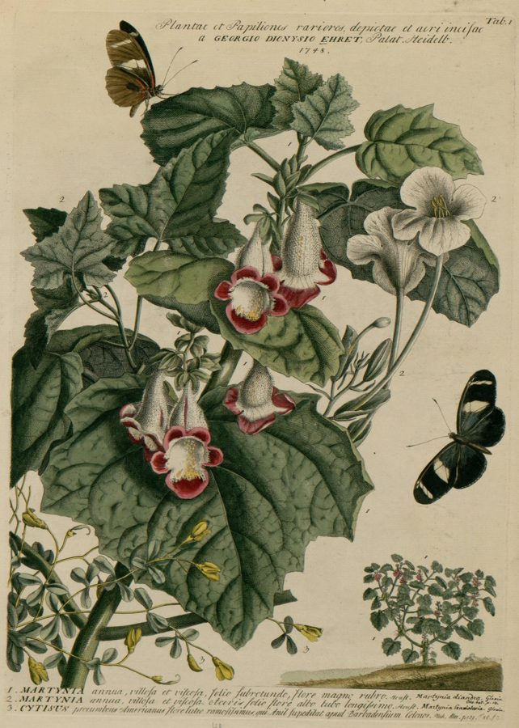

बिच्छूDevil's Claw
Martynia annua · Martyniaceae · FLR-0214

- Scientific name वैज्ञानिक नाम
- Martynia annua L.
- Family कुल
- Martyniaceae
- Hindi हिंदी
- बिच्छू / काकनासिका
- Local names स्थानीय नाम
- bichhu, bichchhu, kaknasika, devils claw
- Status here यहाँ की स्थिति
- naturalized
- Movement आवागमन
- Resident, here all year
- IUCN IUCN
- not evaluated
- Review समीक्षा
- audited and independently read
When to look कब देखें
Expected mainly in May, June, July, August, September, October, November. मुख्यतः मई, जून, जुलाई, अगस्त, सितंबर, अक्टूबर, नवंबर में अपेक्षित।
Uses and possibilities उपयोग और संभावनाएँ
Drawn from the documented uses in the profile below, where each is labelled traditional, current or a research lead. All uses →
बिच्छू / Devil's Claw
Martynia annua L. — Martyniaceae
बिच्छू — गर्मियों में खेतों और गाँवों की पगड़ंडियों पर अपने आप उग आने वाला एक मोटी पत्तियों वाला पौधा। इसके फूल गुलाबी-बैंगनी होते हैं, पर इसकी असली विशेषता है इसका फल — दो लंबी, तीव्र, घुमावदार काँटे जैसे कि बिच्छू की पूँछ। पारंपरिक रूप से इसे काँटों के लिए उगाया जाता रहा है, और आज भी गाँवों में बीजों को सजावटी वस्तु के रूप में बेचा जाता है।
Quick Identification त्वरित पहचान
| Feature | Description |
|---|---|
| Habit | Annual herb, bushy and spreading, 60–100 cm tall, sticky-hairy |
| Leaves | Large, opposite, ovate to cordate, 10–20 cm, deeply veined, margins coarsely toothed |
| Flowers | 5-petalled, pale pink to rose-purple, funnel-shaped, 3–4 cm, in terminal racemes |
| Fruit | Hard, woody capsule, 4–6 cm long, with two prominent curved, horn-like spines at the apex — resembling a scorpion's tail |
| Spines | Extremely sharp, hardened, capable of piercing skin; barbed or hooked at the tip |
| Stem | Sticky, hairy, angular, greenish; leaves emit musky odour when crushed |
Field tip: A bushy plant with large, softly fuzzy leaves and pink flowers followed by hard, two-horned fruits. The curved spines are unmistakable and sharp enough to draw blood. Handle with care when walking through fields in late summer.
Morphology आकारिकी
| Measurement | Range |
|---|---|
| Plant height | 60–100 cm |
| Leaf length | 10–20 cm |
| Leaf width | 8–15 cm |
| Flower diameter | 3–4 cm |
| Fruit length (with spines) | 4–6 cm |
| Spine length | 1.5–3 cm |
Habit: Annual herb, branched from base, spreading or erect, 60–100 cm tall; stem sticky, hairy throughout, with glandular hairs secreting a musky liquid.
Leaves: Opposite, ovate to broadly cordate, 10–20 cm × 8–15 cm; apex acute, base cordate; margins coarsely and irregularly toothed; both surfaces soft-hairy; venation prominent; petiole 2–6 cm, sticky-hairy.
Inflorescence: Terminal or axillary raceme, 10–15 cm long. Flowers buds greenish; flowers open progressively from base upward.
Flowers: 5 sepals, fused into a cup; 5 petals, pale pink to rose-purple (sometimes pale yellow), funnel-shaped, 3–4 cm diameter; 4 stamens (didynamous); ovary superior, elongate.
Fruit (capsule): A hard, woody, pyriform (pear-shaped) capsule, 4–6 cm long, initially green, becoming pale brown or greyish when ripe; smooth surface with fine longitudinal ridges. The two curved horns extend from the apex — these are modified stigmas or projections of the fruit wall. Each horn 1.5–3 cm, sharp-tipped, sometimes with a hooked recurve at the end. The fruit splits open at maturity to release seeds, with the horns remaining attached and hardening further.
Seeds: Small, blackish, numerous (30–50 per fruit), irregularly shaped, slightly flattened.
हिंदी: पत्तियाँ बड़ी, नरम बाल से ढकी, गंध आती है जब दबाई जाएँ। फल लकड़ी जैसा, कठोर, दो लंबे, तीव्र काँटे।
Behaviour & Ecology व्यवहार और पारिस्थितिकी
Martynia annua is a warmth-demanding annual that germinates in late spring (May–June) and grows rapidly through the monsoon and post-monsoon season. The plant prefers disturbed, well-drained soils and thrives in cultivated and waste ground. It is drought-tolerant once established and shows allelopathic potential — the sticky musky exudate may suppress competing plants.
The sticky hairs and musky odour are thought to deter herbivores and may act as defence against small insects. Larger animals (cattle, goats) do browse the foliage when young and tender, particularly before the plant hardens.
The flowers attract small bees and other pollinators, particularly in early morning. Pollination is entomophilous (insect-mediated). The fruits are dispersed mechanically — the sharp, hooked spines attach to the feet and fur of animals and to clothing and skin of humans. One plant can produce 100–200 fruits in a season; each fruit carries 30–50 seeds long distances. The barbed spines sometimes penetrate soft tissue.
The plant's sticky, resinous exudates have been used traditionally to trap insects, though it is not clear if this provides any benefit to the plant itself.
हिंदी: मई–जून में अंकुरित होता है, गर्मी से तेज़ी से बढ़ता है। शुष्क मिट्टी में रह सकता है। बड़े पशु पत्तियाँ खाते हैं, पर जब पौधा कठोर हो जाता है तो नहीं। फल की काँटेदार भुजाएँ जानवरों के पैरों से चिपक जाती हैं। एक पौधा 100–200 फल दे सकता है।
Life Cycle / Phenology जीवन चक्र
- Germination: Late May–June (monsoon onset); temperature-dependent; thrives in temperatures above 20 °C
- Vegetative growth: July–August; plant develops rapidly, achieving full height by mid-August
- Flowering: August–October; flowers produced progressively on elongating shoots
- Fruit development and maturation: September–November; fruits harden and dry on the plant
- Seed dispersal: October–December; mature fruits attach readily to animals and clothing
- Death: Plant killed by first frost or sustained temperatures below 10 °C (December–January in eastern UP)
- Seed bank: Seeds remain viable in soil for at least 2 years; germination requires warming
हिंदी: मई–जून: बीज निकलना। जुलाई–अगस्त: तेज़ी से बढ़ना। अगस्त–अक्टूबर: फूल। सितंबर–नवंबर: फल पकना। अक्टूबर–दिसंबर: बीज फैलना। जनवरी: सर्दी में पौधा मर जाता है।
Agricultural / Human Relevance कृषि और मानव संबंध
Traditional use: In the Indian subcontinent, Martynia annua has been cultivated deliberately for its decorative, hard fruits since at least the 18th century. The dried fruits with their distinctive paired spines have been used for:
- Decorative crafts (string crafts, ornamental displays)
- Children's toys and novelties
- Talisman or amulet-like charms (the shape resembles a scorpion's tail, hence the protective association in some traditions)
- Seed oil extraction (small-scale, traditional)
Today: The plant is still semi-cultivated in some villages of Basti district, where farmers deliberately save seeds and allow plants to self-seed. The fruits are dried and sold in local markets as ornamental items and as toys for children. The dried fruits are sometimes used in string craft (threading and weaving). The plant's presence in wastelands and field margins has made it informally valued as a "free ornamental."
Research direction (a lead, not a result): The musky exudate produced by the sticky hairs contains volatile compounds (not yet chemically characterized for Martynia annua); these deserve analysis for antimicrobial or insect-deterrent properties. The fruit architecture — the paired, hooked spines — represents a case study in zoochorous dispersal and seed-retention mechanisms; quantifying attachment strength to different fabric and fur types could inform biomaterial design. The allelopathic potential of the sticky glandular exudate warrants investigation with common crop and weed species.
Caution: The sharp spines of the fruit can penetrate skin and cause puncture wounds. Infection is possible if the wound is not cleaned. Handling fruits should be done with care, particularly when walking barefoot in fields or gardens where the plant is present.
हिंदी: पारंपरिक: सजावटी वस्तुएँ बनाई जाती हैं। आज भी: सूखे फल बाजार में बिकते हैं, खिलौने के रूप में। हानि: तीव्र काँटे चोट पहुँचा सकते हैं।
Expected Locally स्थानीय रूप से अपेक्षित
Not a field record. Written from published accounts for eastern Uttar Pradesh. No confirmed local sighting yet — if you have seen it, that is what the atlas needs.
अभी तक स्थानीय पुष्टि नहीं। यह विवरण प्रकाशित स्रोतों से है, किसी अवलोकन से नहीं।
Martynia annua is to be expected in cultivated fields, waste ground, and village margins throughout Basti and eastern Uttar Pradesh, particularly in the post-monsoon season (September–November) when fruits are mature and visible. The plant appears in old fallow fields, along field bunds, and around habitations where seeds may have been deliberately planted or have arrived via animal or human transport. Look along dirt tracks where the sharp fruits are most likely to catch clothing and along roadsides where waste from fields accumulates. The first local record would be a photograph with date and location, sent through the atlas.
Distribution वितरण
Global range: Native to Mexico and Central America; now naturalized throughout tropical and subtropical regions of Asia, Africa, and South America.
In India: Present across much of the Indian subcontinent, from sea level to about 1,500 m elevation; recorded in wastelands, cultivated fields, and village margins from the northern plains to the Deccan.
In Uttar Pradesh: Scattered across the state, particularly in the cultivated plains; abundance increases toward eastern districts.
In Basti district / eastern UP: Expected as a minor weed and occasional semi-cultivated plant in fields, wastelands, and village surroundings; exact distribution unclear — formal surveys are lacking.
Research Questions शोध प्रश्न
Anyone can investigate these | कोई भी इन प्रश्नों की जाँच कर सकता है
- How far do the fruit spines travel on a single animal? / फल की काँटे एक जानवर पर कितनी दूर जाते हैं? — Place a mature fruit on a goat or cow's foot or fur; track how far the animal walks before the fruit is dislodged; repeat for 5 animals.
- Does the sticky exudate actually repel herbivores? / क्या गंद वाली चिपचिपी चीज़ से जानवर दूर रहते हैं? — Offer fresh stems to caged goats and sheep; compare feeding on bichhu vs. other common plants in controlled conditions.
- What is the traditional use in your village or nearby villages? / आपके गाँव में बिच्छू का क्या इस्तेमाल है? — Interview 5 older residents; document current or historical uses.
- Can seeds germinate after passing through an animal's digestive system? / क्या जानवर के पेट से गुज़रने के बाद भी बीज अंकुरित हो सकते हैं? — Collect seeds from cow dung; test germination rates compared to fresh seeds.
- Do the fruits reduce competition for the plant? / क्या फलों की काँटों से पौधे को आसपास कम प्रतियोगिता रहती है? — Measure plant density within 1 m of a mature bichhu plant vs. 3+ m away; is the immediate zone less densely vegetated?
Similar Species मिलती-जुलती प्रजातियाँ
| Species | How to tell apart | हिंदी |
|---|---|---|
| Martynia diandra | Smaller flowers (1.5–2 cm); fruits more strongly hooked; rare in eastern UP | छोटे फूल, ज़्यादा घुमे हुए काँटे |
| Ipomoea species (morning glories) | Similar pink/purple flowers but leaves are simpler, not cordate; flowers bell-shaped not funnel-shaped; climbing or trailing habit | गुलाबी फूल पर पत्तियाँ सरल; बेल जैसे |
| Datura species | Similar large flowers but white/yellow, not pink; leaves deeply lobed not toothed; fruit a prickly capsule, not two-horned | फूल सफेद या पीले, दो नहीं काँटे |
Field rule: Large softly-hairy leaves + pink-purple funnel flowers + hard woody fruit with two prominent curved, barbed horns = Martynia annua. The horns are unmistakable once you have seen them.
Taxonomy & Classification वर्गीकरण
Original description. Martynia annua was described by Carl Linnaeus in 1753 in Species Plantarum 1: 618. The genus is named after John Martyn (1699–1768), a botanist and gardener at Cambridge. The specific epithet annua refers to its annual habit.
Subspecies. Monotypic — no subspecies are currently recognised.
Family and order placement. Belongs to the order Lamiales, family Martyniaceae. This is a small family, formerly sometimes placed within Pedaliaceae or Acanthaceae, but modern molecular classification confirms it as distinct. The family is pantropical and comprises about 5 genera and 16 species.
Phylogenetic notes. Martyniaceae, though small, is well-supported as a distinct lineage within Lamiales, related to Acanthaceae and Pedaliaceae. Martynia itself is the largest genus in the family.
IUCN status rationale. This species has not been formally assessed by the IUCN Red List. As a successful, widely naturalized weed, its population is extremely stable and expanding, and faces no conservation threats.
Photo Gallery फोटो गैलरी
Photos needed आवश्यक फोटो
- [ ] Full plant in field or waste ground (पूरा पौधा — खेत में)
- [ ] Pink flowers close-up (फूल — गुलाबी, पास से)
- [ ] Mature fruit with two horns / spines (फल — दोनों काँटों के साथ)
- [ ] Fruit penetrating cloth or fabric (काँटा कपड़े में चुभता है)
- [ ] Leaves showing texture and toothed margins (पत्तियाँ — दाँतेदार किनारे)
Atlas Connections संबंधित प्रजातियाँ
- Touch-me-not — shares waste-ground and village-margin habitat; both are spreading weeds (FLR-0089)
- Congress Grass — co-occurs in disturbed soils; both pioneer habitat (FLR-0001)
- Dhatura — similar large flowers and toxic/problematic status; both warm-season annuals (FLR-0015)
References संदर्भ
- Linnaeus, C. (1753). Species Plantarum, 1: 618. Laurentii Salvii, Holmiae.
- Hooker, J.D. (1885). Flora of British India, Vol. 4: 357–358. L. Reeve & Co., London.
- Wight, R. (1844). Illustrations of Indian Botany, Vol. 1: 143. J. B. Wight, Madras.
- Botanical Survey of India (BSI) — Flora of Uttar Pradesh (unpublished flora compilations for eastern districts).
- Nee, M. (2001). Martyniaceae, in K. Kubitzki (ed.), The Families and Genera of Vascular Plants, Vol. 8: 304–308. Springer, Berlin.
- GBIF Occurrence Data — Martynia annua L., India (2026). GBIF taxon key: 3135476.
Source file: species/flora/weeds/bichhu.md